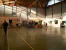
Moissy-Cramayel, la saison cerf-volant continue en indoor, et prend son re-départ au gymnase des Maillettes, un grand gymnase lumineux, aux poutres tout juste assez hautes pour les lignes des pilotables indoor... Mais il n'y a pas de panneaux de basket, chouette !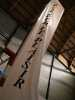
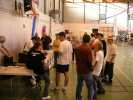
Pour les compétiteurs, briefing initial... Ensuite déclarations conjointes d'intentions pour la saison indoor : la FFVL continuera d'organiser un Championnat (ou Challenge, je n'ai pas tout compris).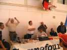
De son côté, Dominique Miquet, dont le magasin sponsorise des rencontres dans le Nord, s'est sorti de ce championnat. Ses rencontres seront ainsi plus libres au niveau des règles, mais comporteront toujours des compétitions et des lots (avec un classement global ?).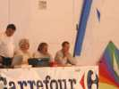
Mais faut pas perdre de temps. Matin, les imposées. Le jury est très attentif...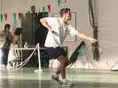
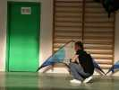
Jeremy attend son tour en le surveillant...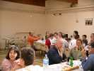
Ouf, les imposées, fini ! On va pouvoir déjeuner après une petite sangria, le tout offert par la maison...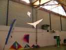
Dominique a monté un oiseau qu'il a en vente. Un peu lourd et peu toilé pour l'indoor, mais on peut le faire voler au bout d'une canne à pêche !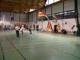
Profitant des trous des compèts, Damien, Fabrice et Jeremy montent un petit team à eux, avec des figures ambitieuses !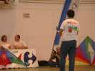
Bruno n'arrive qu'à midi. Par faveur, on lui fait un rattrapage des imposées. Mais il faut qu'il les apprenne avant le départ, il ne les a pas regardées encore !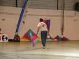
Mais c'est pas facile de les exécuter d'un oeil en lisant la feuille de l'autre en même temps, d'où abandon rapide du candidat...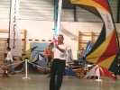
Fabrice présente son ballet avec ses tricks à lui et une vitesse d'exécution qui le laisse hors d'haleine pendant dix minutes !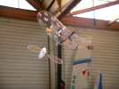
Dans les interludes, un show d'avions télécommandés indoor, très légers. Le plus light est cet avion-fleur dont la construction rappelle celle des "cacahuètes", en plus lourd quand même...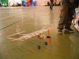
Celui-ci est déjà plus "lourd", mais dans un choc frontal, hélice contre hélice, il a quand même perdu...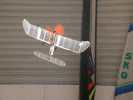
Ces machines permettent des évolutions amusantes, sans aller jusqu'à passer la voltige (quoique, si on essayait ?).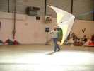
L'après-midi, la compète, ce sont les ballets. Patrick se présente exceptionnellement sans chapeau pour se faire bien voir sans doute de Dominique qui arbore une nouvelle coupe de cheveux très lisse...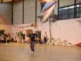
Jeremy fait tout, le deux lignes comme le quatre lignes !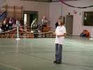
En catégorie "Novices", la valeur n'attend pas le nombre des années. Ce garçon au look très "ado de maintenant" présente une fort belle routine !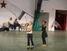
Dans les attractions, un ensemble de "Twirling" a montré son habileté à jongler avec les cannes... en visant bien entre les projecteurs pour le prof, plus puissant...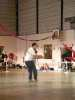
Le ballet de Bruno est toujours spécial et l'intéresse beaucoup plus que les imposées. Il commence avec son delta sur stick, continue avec l'hirondelle monofil...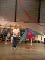
...et termine avec le delta. Et il faut regarder le cervoliste au moins autant que le cerf-volant. Mais de l'émotion passe...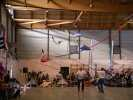
On présentera aussi le show "malards", cette création de Louis !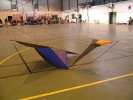
Le malard a vu de nombreux adeptes en fabriquer, et il s'en crée toujours de nouveaux !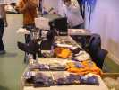
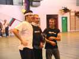
En quatre lignes, les 3 vainqueurs (fallait s'y attendre, ils n'étaient que trois...).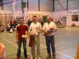